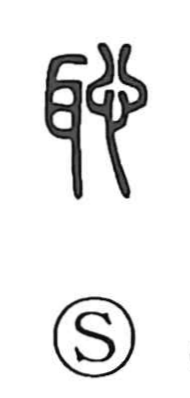

恥

Uncategorized
Kun: hajiru, haji, hajirau, hazukashii | On: chi
shame ・ to feel ashamed ・ embarrassment
Explanation
The graph joins ear and heart to depict how an inward feeling appears outwardly. When the heart is stricken with shame, the ears are the first to flush; because bashfulness shows at the ears, the character naturally came to mean to feel shame and shame itself.